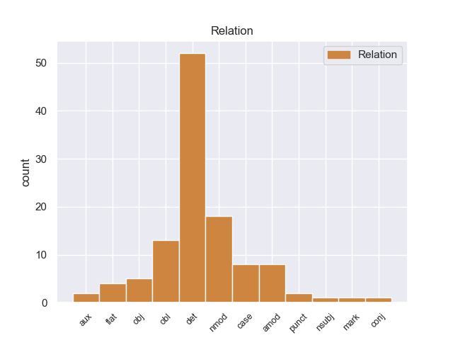
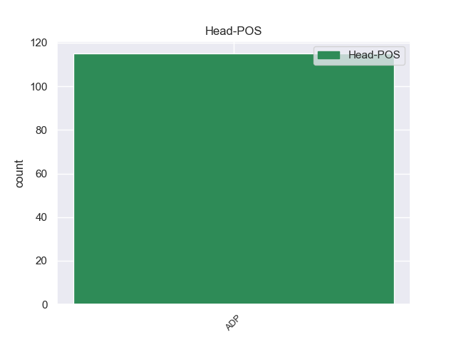
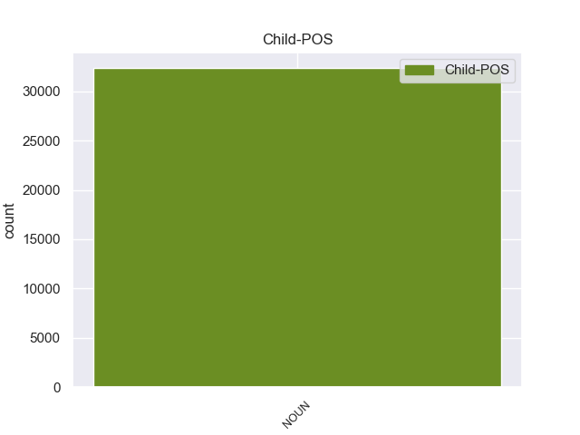

Distribution of features within this leaf



Agreement Rules sorted by frequency.
When the head token is ADP and the dependent token is DET.
1 De _ _ _ _ 0 _ _ _
2 los _ _ _ _ 0 _ _ _
3 546 _ _ _ _ 0 _ _ _
4 habitantes _ _ _ _ 0 _ _ _
5 , _ _ _ _ 0 _ _ _
6 Chester _ _ _ _ 0 _ _ _
7 estaba _ _ _ _ 0 _ _ _
8 compuesto _ _ _ _ 0 _ _ _
9 por _ _ _ _ 0 _ _ _
10 el _ _ _ _ 0 _ _ _
11 98.72 98.72 ADP _ Gender=Masc|Number=Sing 0 _ _ _
12 % _ _ _ _ 0 _ _ _
13 blancos _ _ _ _ 0 _ _ _
14 , _ _ _ _ 0 _ _ _
15 el el DET _ Definite=Def|Gender=Masc|Number=Sing|PronType=Art 11 det _ _
16 0 _ _ _ _ 0 _ _ _
17 % _ _ _ _ 0 _ _ _
18 eran _ _ _ _ 0 _ _ _
19 afroamericanos _ _ _ _ 0 _ _ _
20 , _ _ _ _ 0 _ _ _
21 el _ _ _ _ 0 _ _ _
22 0.37 _ _ _ _ 0 _ _ _
23 % _ _ _ _ 0 _ _ _
24 eran _ _ _ _ 0 _ _ _
25 amerindios _ _ _ _ 0 _ _ _
26 , _ _ _ _ 0 _ _ _
27 el _ _ _ _ 0 _ _ _
28 0.18 _ _ _ _ 0 _ _ _
29 % _ _ _ _ 0 _ _ _
30 eran _ _ _ _ 0 _ _ _
31 asiáticos _ _ _ _ 0 _ _ _
32 , _ _ _ _ 0 _ _ _
33 el _ _ _ _ 0 _ _ _
34 0 _ _ _ _ 0 _ _ _
35 % _ _ _ _ 0 _ _ _
36 eran _ _ _ _ 0 _ _ _
37 isleños _ _ _ _ 0 _ _ _
38 de _ _ _ _ 0 _ _ _
39 el _ _ _ _ 0 _ _ _
40 Pacífico _ _ _ _ 0 _ _ _
41 , _ _ _ _ 0 _ _ _
42 el _ _ _ _ 0 _ _ _
43 0 _ _ _ _ 0 _ _ _
44 % _ _ _ _ 0 _ _ _
45 eran _ _ _ _ 0 _ _ _
46 de _ _ _ _ 0 _ _ _
47 otras _ _ _ _ 0 _ _ _
48 razas _ _ _ _ 0 _ _ _
49 y _ _ _ _ 0 _ _ _
50 el _ _ _ _ 0 _ _ _
51 0.73 _ _ _ _ 0 _ _ _
52 % _ _ _ _ 0 _ _ _
53 pertenecían _ _ _ _ 0 _ _ _
54 a _ _ _ _ 0 _ _ _
55 dos _ _ _ _ 0 _ _ _
56 o _ _ _ _ 0 _ _ _
57 más _ _ _ _ 0 _ _ _
58 razas _ _ _ _ 0 _ _ _
59 . _ _ _ _ 0 _ _ _
When the head token is ADP and the dependent token is DET. and the head token is ADP and the dependent token is PUNCT.
1 El _ _ _ _ 0 _ _ _
2 ingreso ingreso ADP _ Gender=Fem|Number=Sing 0 _ _ _
3 per _ _ _ _ 0 _ _ _
4 cápita cápita PUNCT _ Gender=Fem|Number=Sing 2 amod _ _
5 para _ _ _ _ 0 _ _ _
6 la _ _ _ _ 0 _ _ _
7 localidad _ _ _ _ 0 _ _ _
8 era _ _ _ _ 0 _ _ _
9 de _ _ _ _ 0 _ _ _
10 $ _ _ _ _ 0 _ _ _
11 14.159 _ _ _ _ 0 _ _ _
12 . _ _ _ _ 0 _ _ _
When the head token is ADP and the dependent token is DET. and the head token is ADP and the dependent token is PUNCT. and the head token is ADP and the dependent token is ADJ.
1 Lucanus lucanus ADP _ Gender=Fem|Number=Sing 0 _ _ _
2 placidus _ _ _ _ 0 _ _ _
3 es _ _ _ _ 0 _ _ _
4 una _ _ _ _ 0 _ _ _
5 especie _ _ _ _ 0 _ _ _
6 de _ _ _ _ 0 _ _ _
7 coleóptero _ _ _ _ 0 _ _ _
8 de _ _ _ _ 0 _ _ _
9 la _ _ _ _ 0 _ _ _
10 familia _ _ _ _ 0 _ _ _
11 Lucanidae lucanidae ADJ _ Gender=Fem|Number=Sing 1 nmod _ _
12 . _ _ _ _ 0 _ _ _
When the head token is ADP and the dependent token is DET. and the head token is ADP and the dependent token is PUNCT. and the head token is ADP and the dependent token is ADJ. and the head token is ADP and the dependent token is VERB.
1 El _ _ _ _ 0 _ _ _
2 gerente _ _ _ _ 0 _ _ _
3 de _ _ _ _ 0 _ _ _
4 el _ _ _ _ 0 _ _ _
5 Hospital _ _ _ _ 0 _ _ _
6 de _ _ _ _ 0 _ _ _
7 Benasque _ _ _ _ 0 _ _ _
8 , _ _ _ _ 0 _ _ _
9 Jorge _ _ _ _ 0 _ _ _
10 Mayoral _ _ _ _ 0 _ _ _
11 , _ _ _ _ 0 _ _ _
12 manifestó manifestó VERB _ Gender=Fem|Number=Sing 29 amod _ _
13 ayer _ _ _ _ 0 _ _ _
14 su _ _ _ _ 0 _ _ _
15 " _ _ _ _ 0 _ _ _
16 satisfacción _ _ _ _ 0 _ _ _
17 " _ _ _ _ 0 _ _ _
18 por _ _ _ _ 0 _ _ _
19 la _ _ _ _ 0 _ _ _
20 reapertura _ _ _ _ 0 _ _ _
21 , _ _ _ _ 0 _ _ _
22 aunque _ _ _ _ 0 _ _ _
23 recordó _ _ _ _ 0 _ _ _
24 las _ _ _ _ 0 _ _ _
25 pérdidas _ _ _ _ 0 _ _ _
26 que _ _ _ _ 0 _ _ _
27 les _ _ _ _ 0 _ _ _
28 ha _ _ _ _ 0 _ _ _
29 originado originado ADP _ Gender=Fem|Number=Sing 0 _ _ _
30 este _ _ _ _ 0 _ _ _
31 prolongado _ _ _ _ 0 _ _ _
32 cierre _ _ _ _ 0 _ _ _
33 que _ _ _ _ 0 _ _ _
34 ha _ _ _ _ 0 _ _ _
35 coincidido _ _ _ _ 0 _ _ _
36 con _ _ _ _ 0 _ _ _
37 las _ _ _ _ 0 _ _ _
38 fiestas _ _ _ _ 0 _ _ _
39 de _ _ _ _ 0 _ _ _
40 Carnaval _ _ _ _ 0 _ _ _
41 y _ _ _ _ 0 _ _ _
42 la _ _ _ _ 0 _ _ _
43 " _ _ _ _ 0 _ _ _
44 semana _ _ _ _ 0 _ _ _
45 blanca _ _ _ _ 0 _ _ _
46 " _ _ _ _ 0 _ _ _
47 . _ _ _ _ 0 _ _ _
When the head token is ADP and the dependent token is DET. and the head token is ADP and the dependent token is PUNCT. and the head token is ADP and the dependent token is ADJ. and the head token is ADP and the dependent token is VERB. and the head token is ADP and the dependent token is CCONJ.
1 El _ _ _ _ 0 _ _ _
2 Audi _ _ _ _ 0 _ _ _
3 A3 a3 CCONJ _ Gender=Masc|Number=Sing 9 case _ _
4 es _ _ _ _ 0 _ _ _
5 un _ _ _ _ 0 _ _ _
6 automóvil _ _ _ _ 0 _ _ _
7 de _ _ _ _ 0 _ _ _
8 el _ _ _ _ 0 _ _ _
9 segmento segmento ADP _ Gender=Masc|Number=Sing 0 _ _ _
10 C _ _ _ _ 0 _ _ _
11 producido _ _ _ _ 0 _ _ _
12 por _ _ _ _ 0 _ _ _
13 el _ _ _ _ 0 _ _ _
14 fabricante _ _ _ _ 0 _ _ _
15 alemán _ _ _ _ 0 _ _ _
16 Audi _ _ _ _ 0 _ _ _
17 desde _ _ _ _ 0 _ _ _
18 1996 _ _ _ _ 0 _ _ _
19 . _ _ _ _ 0 _ _ _
Disagree Examples:
1 Tras _ _ _ _ 0 _ _ _
2 una _ _ _ _ 0 _ _ _
3 primera _ _ _ _ 0 _ _ _
4 temporada _ _ _ _ 0 _ _ _
5 bastante _ _ _ _ 0 _ _ _
6 buena _ _ _ _ 0 _ _ _
7 tanto _ _ _ _ 0 _ _ _
8 a _ _ _ _ 0 _ _ _
9 nivel _ _ _ _ 0 _ _ _
10 personal _ _ _ _ 0 _ _ _
11 ( _ _ _ _ 0 _ _ _
12 8 _ _ _ _ 0 _ _ _
13 goles _ _ _ _ 0 _ _ _
14 ) _ _ _ _ 0 _ _ _
15 como _ _ _ _ 0 _ _ _
16 colectivo _ _ _ _ 0 _ _ _
17 ( _ _ _ _ 0 _ _ _
18 12 _ _ _ _ 0 _ _ _
19 ª _ _ _ _ 0 _ _ _
20 posición _ _ _ _ 0 _ _ _
21 ) _ _ _ _ 0 _ _ _
22 , _ _ _ _ 0 _ _ _
23 en _ _ _ _ 0 _ _ _
24 la _ _ _ _ 0 _ _ _
25 segunda _ _ _ _ 0 _ _ _
26 su _ _ _ _ 0 _ _ _
27 rendimiento _ _ _ _ 0 _ _ _
28 ni _ _ _ _ 0 _ _ _
29 el _ _ _ _ 0 _ _ _
30 de _ _ _ _ 0 _ _ _
31 el _ _ _ _ 0 _ _ _
32 equipo _ _ _ _ 0 _ _ _
33 no _ _ _ _ 0 _ _ _
34 fue _ _ _ _ 0 _ _ _
35 el _ _ _ _ 0 _ _ _
36 esperado esperado ADJ _ Gender=Masc|Number=Sing 39 obj _ _
37 y _ _ _ _ 0 _ _ _
38 se _ _ _ _ 0 _ _ _
39 marchaba marchaba ADP _ Gender=Fem|Number=Sing 0 _ _ _
40 a _ _ _ _ 0 _ _ _
41 el _ _ _ _ 0 _ _ _
42 Nàstic _ _ _ _ 0 _ _ _
43 de _ _ _ _ 0 _ _ _
44 Tarragona _ _ _ _ 0 _ _ _
45 en _ _ _ _ 0 _ _ _
46 la _ _ _ _ 0 _ _ _
47 Segunda _ _ _ _ 0 _ _ _
48 División _ _ _ _ 0 _ _ _
49 B _ _ _ _ 0 _ _ _
50 en _ _ _ _ 0 _ _ _
51 el _ _ _ _ 0 _ _ _
52 mercado _ _ _ _ 0 _ _ _
53 de _ _ _ _ 0 _ _ _
54 invierno _ _ _ _ 0 _ _ _
55 , _ _ _ _ 0 _ _ _
56 donde _ _ _ _ 0 _ _ _
57 solo _ _ _ _ 0 _ _ _
58 permanecería _ _ _ _ 0 _ _ _
59 hasta _ _ _ _ 0 _ _ _
60 acabar _ _ _ _ 0 _ _ _
61 dicha _ _ _ _ 0 _ _ _
62 campaña _ _ _ _ 0 _ _ _
63 , _ _ _ _ 0 _ _ _
64 haciendo _ _ _ _ 0 _ _ _
65 muy _ _ _ _ 0 _ _ _
66 buena _ _ _ _ 0 _ _ _
67 temporada _ _ _ _ 0 _ _ _
68 personal _ _ _ _ 0 _ _ _
69 con _ _ _ _ 0 _ _ _
70 9 _ _ _ _ 0 _ _ _
71 goles _ _ _ _ 0 _ _ _
72 pero _ _ _ _ 0 _ _ _
73 floja _ _ _ _ 0 _ _ _
74 colectivamente _ _ _ _ 0 _ _ _
75 . _ _ _ _ 0 _ _ _
1 A _ _ _ _ 0 _ _ _
2 la _ _ _ _ 0 _ _ _
3 hora _ _ _ _ 0 _ _ _
4 de _ _ _ _ 0 _ _ _
5 poner _ _ _ _ 0 _ _ _
6 en _ _ _ _ 0 _ _ _
7 orden _ _ _ _ 0 _ _ _
8 los _ _ _ _ 0 _ _ _
9 deslavazados _ _ _ _ 0 _ _ _
10 datos _ _ _ _ 0 _ _ _
11 que _ _ _ _ 0 _ _ _
12 nos _ _ _ _ 0 _ _ _
13 han _ _ _ _ 0 _ _ _
14 llegado llegado ADP _ Gender=Fem|Number=Sing 0 _ _ _
15 de _ _ _ _ 0 _ _ _
16 el _ _ _ _ 0 _ _ _
17 nacimiento _ _ _ _ 0 _ _ _
18 y _ _ _ _ 0 _ _ _
19 desenvolvimiento _ _ _ _ 0 _ _ _
20 de _ _ _ _ 0 _ _ _
21 la _ _ _ _ 0 _ _ _
22 antigua _ _ _ _ 0 _ _ _
23 Hermandad _ _ _ _ 0 _ _ _
24 de _ _ _ _ 0 _ _ _
25 la _ _ _ _ 0 _ _ _
26 Vera _ _ _ _ 0 _ _ _
27 - _ _ _ _ 0 _ _ _
28 Cruz _ _ _ _ 0 _ _ _
29 de _ _ _ _ 0 _ _ _
30 Arahal _ _ _ _ 0 _ _ _
31 , _ _ _ _ 0 _ _ _
32 y _ _ _ _ 0 _ _ _
33 convertir _ _ _ _ 0 _ _ _
34 éstos _ _ _ _ 0 _ _ _
35 en _ _ _ _ 0 _ _ _
36 hitos _ _ _ _ 0 _ _ _
37 entre _ _ _ _ 0 _ _ _
38 los _ _ _ _ 0 _ _ _
39 cuales _ _ _ _ 0 _ _ _
40 en _ _ _ _ 0 _ _ _
41 tiempo _ _ _ _ 0 _ _ _
42 venideros _ _ _ _ 0 _ _ _
43 , _ _ _ _ 0 _ _ _
44 podamos _ _ _ _ 0 _ _ _
45 intercalar _ _ _ _ 0 _ _ _
46 los _ _ _ _ 0 _ _ _
47 que _ _ _ _ 0 _ _ _
48 nos _ _ _ _ 0 _ _ _
49 ofrezca _ _ _ _ 0 _ _ _
50 una _ _ _ _ 0 _ _ _
51 posterior _ _ _ _ 0 _ _ _
52 investigación _ _ _ _ 0 _ _ _
53 , _ _ _ _ 0 _ _ _
54 nos _ _ _ _ 0 _ _ _
55 hemos _ _ _ _ 0 _ _ _
56 encontrado _ _ _ _ 0 _ _ _
57 con _ _ _ _ 0 _ _ _
58 que _ _ _ _ 0 _ _ _
59 , _ _ _ _ 0 _ _ _
60 hasta _ _ _ _ 0 _ _ _
61 ahora _ _ _ _ 0 _ _ _
62 , _ _ _ _ 0 _ _ _
63 y _ _ _ _ 0 _ _ _
64 quizá _ _ _ _ 0 _ _ _
65 debido _ _ _ _ 0 _ _ _
66 a _ _ _ _ 0 _ _ _
67 el _ _ _ _ 0 _ _ _
68 tiempo tiemp DET _ Gender=Masc|Number=Sing 14 obl _ _
69 que _ _ _ _ 0 _ _ _
70 hace _ _ _ _ 0 _ _ _
71 que _ _ _ _ 0 _ _ _
72 dicha _ _ _ _ 0 _ _ _
73 cofradía _ _ _ _ 0 _ _ _
74 no _ _ _ _ 0 _ _ _
75 tiene _ _ _ _ 0 _ _ _
76 vida _ _ _ _ 0 _ _ _
77 , _ _ _ _ 0 _ _ _
78 es _ _ _ _ 0 _ _ _
79 la _ _ _ _ 0 _ _ _
80 de _ _ _ _ 0 _ _ _
81 esta _ _ _ _ 0 _ _ _
82 ciudad _ _ _ _ 0 _ _ _
83 a _ _ _ _ 0 _ _ _
84 la _ _ _ _ 0 _ _ _
85 que _ _ _ _ 0 _ _ _
86 se _ _ _ _ 0 _ _ _
87 le _ _ _ _ 0 _ _ _
88 ha _ _ _ _ 0 _ _ _
89 dedicado _ _ _ _ 0 _ _ _
90 menos _ _ _ _ 0 _ _ _
91 estudio _ _ _ _ 0 _ _ _
92 , _ _ _ _ 0 _ _ _
93 o _ _ _ _ 0 _ _ _
94 si _ _ _ _ 0 _ _ _
95 se _ _ _ _ 0 _ _ _
96 le _ _ _ _ 0 _ _ _
97 ha _ _ _ _ 0 _ _ _
98 hecho _ _ _ _ 0 _ _ _
99 , _ _ _ _ 0 _ _ _
100 desgraciadamente _ _ _ _ 0 _ _ _
101 no _ _ _ _ 0 _ _ _
102 nos _ _ _ _ 0 _ _ _
103 es _ _ _ _ 0 _ _ _
104 conocido _ _ _ _ 0 _ _ _
105 . _ _ _ _ 0 _ _ _
1 -- _ _ _ _ 0 _ _ _
2 El _ _ _ _ 0 _ _ _
3 comisario _ _ _ _ 0 _ _ _
4 europeo _ _ _ _ 0 _ _ _
5 de _ _ _ _ 0 _ _ _
6 Asuntos _ _ _ _ 0 _ _ _
7 Económicos _ _ _ _ 0 _ _ _
8 y _ _ _ _ 0 _ _ _
9 Monetarios _ _ _ _ 0 _ _ _
10 , _ _ _ _ 0 _ _ _
11 el el DET _ Definite=Def|Gender=Masc|Number=Sing|PronType=Art 25 det _ _
12 finlandés _ _ _ _ 0 _ _ _
13 Olli _ _ _ _ 0 _ _ _
14 Rehn _ _ _ _ 0 _ _ _
15 , _ _ _ _ 0 _ _ _
16 aseguró _ _ _ _ 0 _ _ _
17 hoy _ _ _ _ 0 _ _ _
18 en _ _ _ _ 0 _ _ _
19 Helsinki _ _ _ _ 0 _ _ _
20 que _ _ _ _ 0 _ _ _
21 España _ _ _ _ 0 _ _ _
22 no _ _ _ _ 0 _ _ _
23 se _ _ _ _ 0 _ _ _
24 ha _ _ _ _ 0 _ _ _
25 contagiado contagiado ADP _ Gender=Fem|Number=Sing 0 _ _ _
26 de _ _ _ _ 0 _ _ _
27 la _ _ _ _ 0 _ _ _
28 crisis _ _ _ _ 0 _ _ _
29 portuguesa _ _ _ _ 0 _ _ _
30 , _ _ _ _ 0 _ _ _
31 lo _ _ _ _ 0 _ _ _
32 que _ _ _ _ 0 _ _ _
33 le _ _ _ _ 0 _ _ _
34 ha _ _ _ _ 0 _ _ _
35 permitido _ _ _ _ 0 _ _ _
36 alejar _ _ _ _ 0 _ _ _
37 se _ _ _ _ 0 _ _ _
38 de _ _ _ _ 0 _ _ _
39 el _ _ _ _ 0 _ _ _
40 bloque _ _ _ _ 0 _ _ _
41 de _ _ _ _ 0 _ _ _
42 países _ _ _ _ 0 _ _ _
43 más _ _ _ _ 0 _ _ _
44 endeudados _ _ _ _ 0 _ _ _
45 de _ _ _ _ 0 _ _ _
46 la _ _ _ _ 0 _ _ _
47 eurozona _ _ _ _ 0 _ _ _
48 . _ _ _ _ 0 _ _ _
1 La _ _ _ _ 0 _ _ _
2 economía _ _ _ _ 0 _ _ _
3 de _ _ _ _ 0 _ _ _
4 Irán _ _ _ _ 0 _ _ _
5 es _ _ _ _ 0 _ _ _
6 una _ _ _ _ 0 _ _ _
7 economía _ _ _ _ 0 _ _ _
8 de _ _ _ _ 0 _ _ _
9 transición _ _ _ _ 0 _ _ _
10 donde _ _ _ _ 0 _ _ _
11 un _ _ _ _ 0 _ _ _
12 crecimiento _ _ _ _ 0 _ _ _
13 continuo _ _ _ _ 0 _ _ _
14 elevado _ _ _ _ 0 _ _ _
15 de _ _ _ _ 0 _ _ _
16 la _ _ _ _ 0 _ _ _
17 fuerza _ _ _ _ 0 _ _ _
18 laboral _ _ _ _ 0 _ _ _
19 no _ _ _ _ 0 _ _ _
20 lleva _ _ _ _ 0 _ _ _
21 emparejado _ _ _ _ 0 _ _ _
22 un _ _ _ _ 0 _ _ _
23 crecimiento _ _ _ _ 0 _ _ _
24 económico _ _ _ _ 0 _ _ _
25 real _ _ _ _ 0 _ _ _
26 lo _ _ _ _ 0 _ _ _
27 que _ _ _ _ 0 _ _ _
28 lleva _ _ _ _ 0 _ _ _
29 a _ _ _ _ 0 _ _ _
30 un _ _ _ _ 0 _ _ _
31 nivel _ _ _ _ 0 _ _ _
32 de _ _ _ _ 0 _ _ _
33 desempleo _ _ _ _ 0 _ _ _
34 considerablemente _ _ _ _ 0 _ _ _
35 más _ _ _ _ 0 _ _ _
36 alto _ _ _ _ 0 _ _ _
37 que _ _ _ _ 0 _ _ _
38 las _ _ _ _ 0 _ _ _
39 estimaciones estimaciones ADP _ Gender=Fem|Number=Sing 0 _ _ _
40 oficiales _ _ _ _ 0 _ _ _
41 de _ _ _ _ 0 _ _ _
42 el el DET _ Definite=Def|Gender=Masc|Number=Sing|PronType=Art 39 det _ _
43 11 _ _ _ _ 0 _ _ _
44 % _ _ _ _ 0 _ _ _
45 . _ _ _ _ 0 _ _ _
1 Pues _ _ _ _ 0 _ _ _
2 yo _ _ _ _ 0 _ _ _
3 he _ _ _ _ 0 _ _ _
4 comprado comprado ADP _ Gender=Masc|Number=Sing 0 _ _ _
5 un _ _ _ _ 0 _ _ _
6 portátil _ _ _ _ 0 _ _ _
7 a _ _ _ _ 0 _ _ _
8 una _ _ _ _ 0 _ _ _
9 tienda _ _ _ _ 0 _ _ _
10 app _ _ _ _ 0 _ _ _
11 que _ _ _ _ 0 _ _ _
12 ha _ _ _ _ 0 _ _ _
13 cerrado _ _ _ _ 0 _ _ _
14 , _ _ _ _ 0 _ _ _
15 se _ _ _ _ 0 _ _ _
16 a _ _ _ _ 0 _ _ _
17 estropeado _ _ _ _ 0 _ _ _
18 y _ _ _ _ 0 _ _ _
19 la _ _ _ _ 0 _ _ _
20 central _ _ _ _ 0 _ _ _
21 app _ _ _ _ 0 _ _ _
22 dice _ _ _ _ 0 _ _ _
23 no _ _ _ _ 0 _ _ _
24 responde responde VERB _ Gender=Fem|Number=Sing 4 obl _ _
25 de _ _ _ _ 0 _ _ _
26 la _ _ _ _ 0 _ _ _
27 garantía _ _ _ _ 0 _ _ _
28 a _ _ _ _ 0 _ _ _
29 el _ _ _ _ 0 _ _ _
30 cerrar _ _ _ _ 0 _ _ _
31 esa _ _ _ _ 0 _ _ _
32 tienda _ _ _ _ 0 _ _ _
33 . _ _ _ _ 0 _ _ _